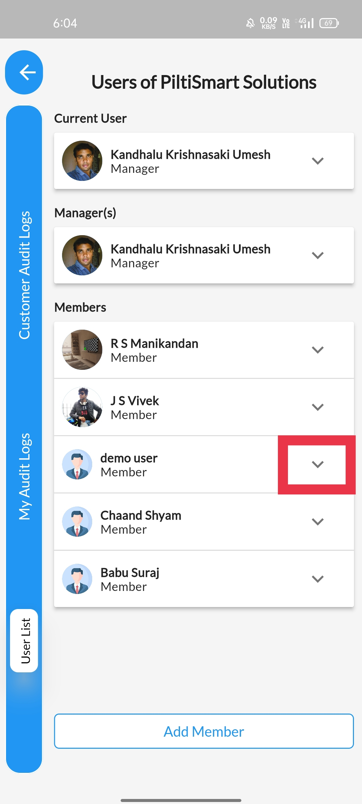

Click on the dropdown menu button avilable at the right side of the tab.

STEP 4
You can notice a field named status and the green colour indicates the user is active.
STEP 5
To terminate a users active state,&Click on the button in green under the field named status&A confirmation, message will be displayed&And the button turns red indicating the user activation is removed.